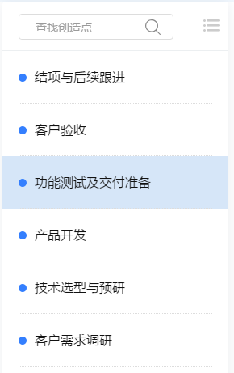
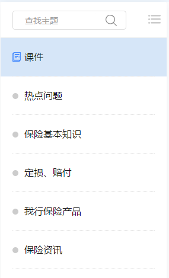
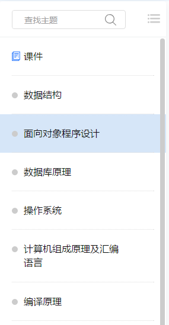
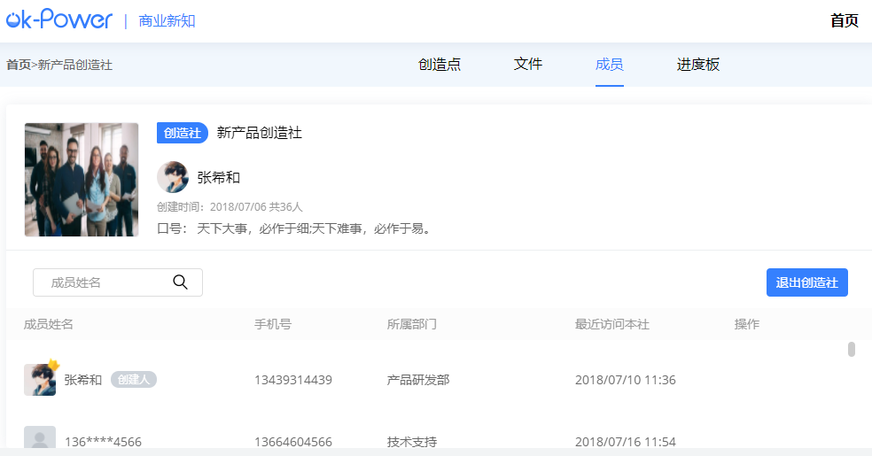
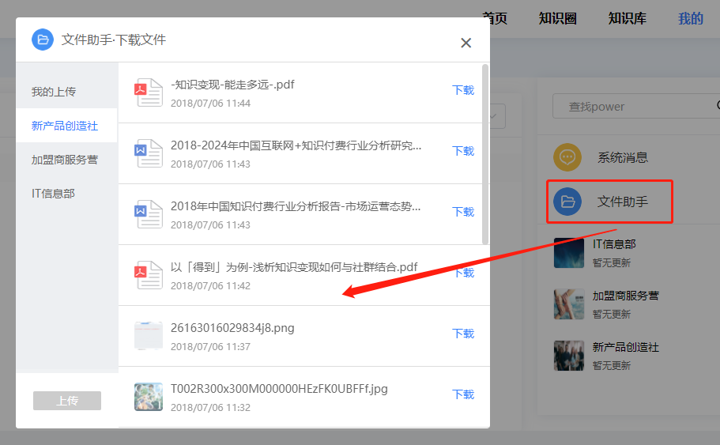
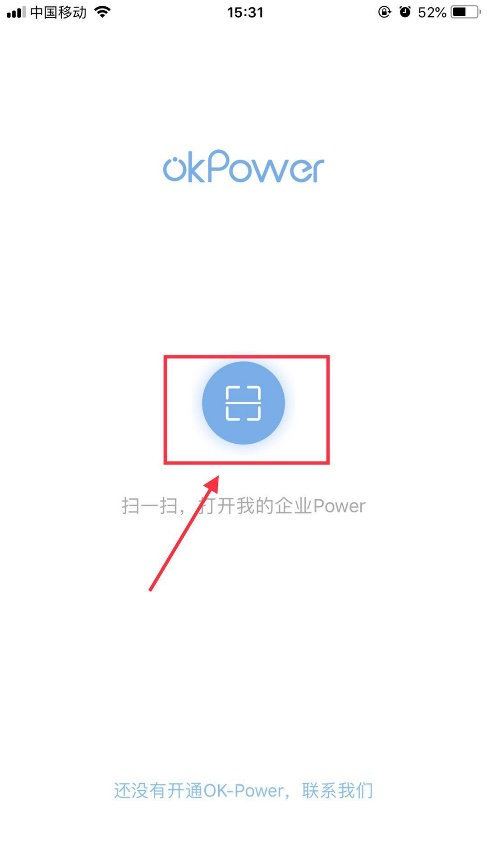
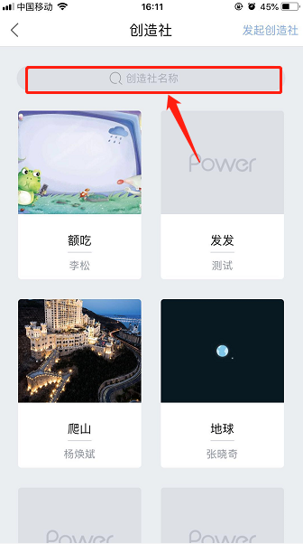
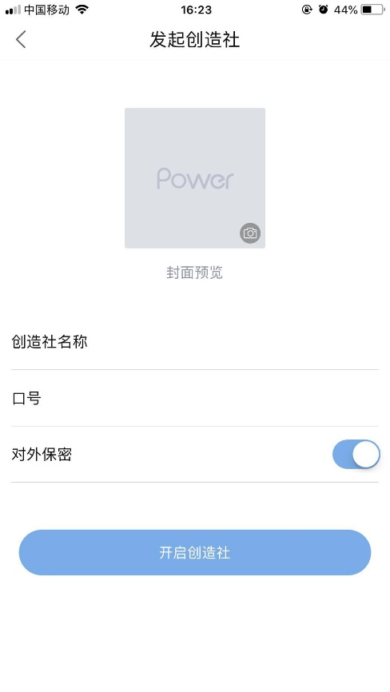
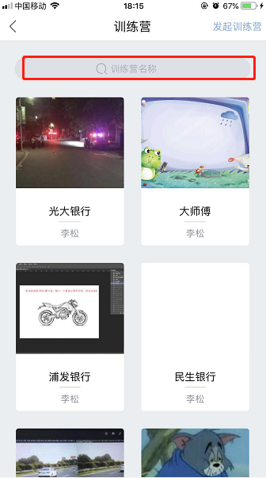
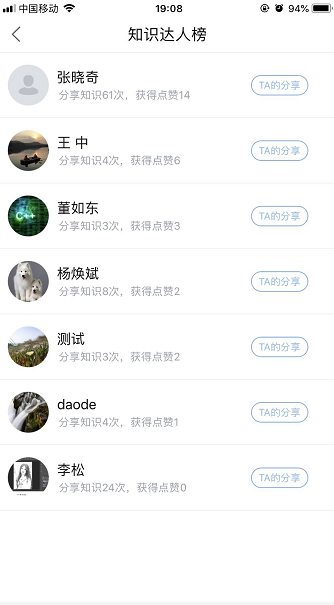

- 常见问题汇总
- 新手入门
- 功能使用手册
OK-Power官网相关
1.如何登录?
进入OK-Power官网，点击右上角“登录”按钮，输入手机号和验证码进行登录。
2.如何申请体验？
方法一：进入OK-Power官网，点击“在线体验”，输入手机号和验证码进行体验。

方法二：进入OK-Power官网，下拉至官网底部，输入手机号后点击“免费体验”
3.如何联系客服?
通过官网进入“服务与支持”
1.如何体验OK-Power网页端?
进入OK-Power官网，点击“在线体验”或者直接打开demo.ok-power.com
点击“注册体验账号”，输入手机号、验证码以及密码，注册完毕后进行登录体验
2.如何体验OK-Power移动端？
下载：①应用商店下载 ②官网-移动端进行下载
点击“进入体验版”，输入手机号、验证码以及密码进行注册，注册完毕后登录开始体验。
3.如何体验OK-Power管理端?
管理端只能在PC端体验。
进入体验版后，登录时，点击右下角“企业管理端登录”
1.如何开通?
进入“官网”，点击“开通OK-Power”进行付费开通。
2.是否付费？
在线体验免费，正式开通OK-Power需要付费，可进入官网-版本与价格查看详情。
3.有哪些付费方式
分为银行汇款和在线支付两种，在线支付支持微信和支付宝。
4.受理时间需要多久?
审核时长为一个工作日。
5.是否支持退款?
不支持退款。
消息提醒
消息提醒的形式
目前OK-Power提供的消息提供方式共有四种形式，分别是红点（数量）提醒、系统消息提醒、右侧Power消息提醒、桌面消息、浏览器标题消息。
红点消息用于提示具体Power内或创造点内产生的新消息
系统消息用于提示与系统验证、成员变动、创造点状态相关的内容
桌面消息用于在您未处于浏览器界面时提醒您新消息
浏览器标题消息用于您处于浏览器界面，但未处于OK-Power标签页时提醒您新消息
创造社使用场景
创造社：灵活的团队工作平台
通过隐性知识显性化，实现知识自动保存、自主结构化和体系化并得以传承
完美支持企业创造型、非结构化、非流程化业务（如新业务论证与开发过程、新项目、市场营销方案的创意策划过程等）
1. 团队工作管理：如何利用创造社更好的管理团队工作
1.1. 方式1：根据团队分工来设置创造点
1.1.1. 要求：团队内的沟通事宜须保证完全在该创造社中进行
1.1.2. 参考图示：
1.1.3. 应用价值：
1） 增加沟通的精准性，针对特定分工的沟通记录完整可追溯
2） 减少团队成员之间因沟通缺失或沟通环节缺失的情况
1.2. 方式2：根据团队近期的目标逐步设置创造点
1.2.1. 要求：清晰整理出团队近期的任务目标或事件
1.2.2. 参考图示：
1.2.3. 应用价值：
1） 每个团队成员均能清晰的知道团队近期目标，并在目标创造点下进行沟通和文件交流，不同分工的成员可根据自身需要来置顶创造点。
2） 团队无需再特地总结过去的任务完成情况，通过创造点可清晰的看到过往任务的执行轨迹，沟通记录能清晰的反映任务过程中出现各类状况，方便团队进行吸纳和总结。
3） 文件自动按照任务名称进行收纳后，团队可通过创造点方便的查阅各任务下的文献资料，也方便团队后续新人进行体系化的学习。
2. 项目工作管理：如何利用创造社高效完成项目管理工作
2.1. 方式1：按照项目标准环节、流程或里程碑节点划分创造点
2.1.1. 要求：环节设置时需较为准确的把握各创造点的截止时间
2.1.2. 参考图示：
2.1.3. 应用价值：
1） 项目流程、进度清晰可控
2） 项目各环节的沟通和文件被单独收纳，可追溯各环节的问题和原因
2.2. 方式2：按照完成项目目标需要完成的具体任务划分创造点
2.2.1. 要求：任务目标清晰，任务责任分配到成员
2.2.2. 参考图示：
2.2.3. 应用价值：
1） 项目任务点拆分的清晰明确
2） 项目各任务点的责任主体和进度情况全员明确
3） 项目文件传递和沟通过程均可根据任务（创造点）进行检索和查找，方便快捷。
3. 个人工作管理：如何利用创造社更好地促进个人工作管理
3.1. 方式1：根据个人的职能范围划分创造点
3.1.1. 参考图示：
3.1.2. 应用价值：
1） 方便个人根据职能范围管理自己的工作
2） 个人在职能范围完成的工作清晰有序，稍加整理即可成为日报周报
3.2. 方式2：根据个人参与或接受的任务划分创造点
3.2.1. 参考图示：
3.2.2. 应用价值：
1） 每日整理个人的工作，让工作思路清晰，时间安排合理，减少遗忘和遗漏
2） 减少因口头传达、临时工作插入导致的时间管理混乱
3） 减少个人因工作任务无整理，而导致的临时工作忘汇报、漏通知的问题。
4） 让领导或同事了解自己的工作状态，能作出更加准确的指令下达和业绩考核
训练营、知识圈使用场景
训练营：灵活组织企业有效培训的在线课堂
为企业带来三大价值
1、 促进知识的流动：让员工脑海中的隐性知识显性化，让外部知识充分流入企业内部。
2、 加快员工的成长：发掘企业内部的知识网红，让老司机带新手变得更为普遍。
3、 为生态体系提供更高效的培训服务：为客户和合作伙伴提供知识交流的平台，让企业意志能得到更快更准确的触达。
一、 企业内部培训
1. 常规培训
1.1. 场景1：人事培训
1.1.1. 方式：建设较为完善的人事培训课件，并发布到训练营的课件模块中，并将人事的常见问题类型整理出来，以主题的方式进行发布，方便员工进行查询和学习。
1.1.2. 示意图
1.1.3. 应用价值
1) 为新人入职提供整体性培训，可根据企业自身情况定义与入职相关的主题点。
2) 人事可根据员工实际需求开设更多主题，比如公积金、社保、纳税、居住证办理等常见事务的流程和注意事项整理成知识进行分享。
3) 一次分享永久可用，大量减少重复沟通和无效沟通，提升人事管理效率。
1.2. 场景2：专业技能培训
1.2.1. 方式：根据专业分类创建训练营，每个训练营内发布该专业分类的学习课程，训练营内根据实际情况可以通过聘请外部培训师的方案，来开设主题对员工进行教学和指导，解答员工提出的实时问题。
1.2.2. 示意图：
1.2.3. 应用价值：
1) 轻松建设企业自有的专业技能学习平台，无需再额外部署专门的E-Learning系统
2) 培养企业内部的知识网红，让老司机带新手，加快员工成长。
3) 通过训练营内置的直播功能，可方便累积企业自制的视频教学课件
4) 随时根据员工需求开设专门的分享主题，后期可通过整理主题下的分享内容，逐渐形成符合企业实际需求的培训课件。
5) 可引入外部培训师，并对培训师的业绩进行考核。
2. 团队技能分享
2.1. 场景1：团队的培训间
2.1.1. 方式：根据团队或部门名称开设训练营，团队根据自身职业或技能特点来收集和发布课件，设置符合团队成员学习需求的主题。
2.1.2. 示意图：
2.1.3. 应用价值：
1) 团队专属培训空间，团队管理者可根据需要来开设分享主题
2) 团队成员间自由分享，引入外部知识，逐步积累高品质知识内容
3) 强大的搜索和主题索引，查找知识点更编辑，定位知识更高效。
4) 培养企业内部的知识网红，让老司机带新手，加快员工成长。
3. 企业文化建设
3.1. 场景1：全员的知识圈
3.1.1. 方式：通过全员分享建设员工社区，促进企业文化建设
3.1.2. 示意图：
3.1.3. 应用价值：
1) 发挥企业员工能动力，促进企业学习氛围的形成
2) 支持对员工知识贡献的自动统计，让贡献可量化，激励落地更容易。
3) 配合企业公告，让高层意志无死角传达，促进企业战略的落地。
4) 分享外部知识更为简单，由员工们筛选的好内容能充分发挥价值。
二、 服务合作伙伴或客户
4. 客户售后服务
4.1. 场景1：技术支持
4.1.1. 方式：根据技术支持的范围或分类来创建训练营，或在一个训练营中，通过划分不同类型的主题来建设技术支持知识库。
4.1.2. 示意图：
4.1.3. 应用价值：
1) 通过文件归档系统沉淀强大的技术支持知识库，可开放给客户进行实时查询和使用。
2) 直面客户需求，强化与客户之间的联动，实时解决客户技术问题。
3) 可随时调用其他技术支持训练营的知识内容，形成知识库建设的集约化和高效化。
4.2. 场景2：客户维护
4.2.1. 方式：根据客户类型、产品与服务名称来开设训练营，训练营主题可根据具体的服务名称来设置。
4.2.2. 示意图：
4.2.3. 应用价值：
1) 让客户更加直接的接触到产品与服务的更新与提升，获取客户的实时反馈，反向促进产品与服务的迭代。
2) 对客户需求和问题进行快速响应，并将解决的问题逐步沉淀为知识库。
3) 强化产品品牌的输出，与客户互动和沟通更为便捷，提升客户服务，促进客户留存。
5. 合作伙伴培训
5.1. 场景1：客服外包培训
5.1.1. 方式：根据产品或服务名称、地域名称等来划分训练营，训练营内根据产品和服务具体的培训面来设置主题。
5.1.2. 示意图：
5.1.3. 应用价值：
1) 全局掌握客服外包的培训情况，通过学习板功能可清晰获知各成员的学习情况。
2) 跟进解决客服遇到的实时问题，沉淀客服知识库
3) 结构化的主题目录体系提供客服更快速、更高效的检索与查询
5.2. 场景2：经销商培训
5.2.1. 方式：根据产品或服务名称、地域名称等来划分训练营，训练营内根据产品和服务具体的培训面来设置主题
5.2.2. 示意图：
5.2.3. 应用价值：
1) 全局掌握经销商的培训情况，通过学习板功能可清晰获知各成员的学习情况。
2) 跟进解决经销商遇到的实时问题，沉淀经销商知识库
3) 结构化的主题目录体系提供经销商更快速、更高效的检索与查询
4) 快速同步产品与服务变更信息到经销商处，提升经销网络的信息传递效率
5.3. 场景3：供应链培训
5.3.1. 方式：根据供应链环节、或供应商类型设置训练营，在训练营设置与产品或服务相关的主题点。
5.3.2. 示意图：
5.3.3. 应用价值：
1) 整合对供应链的培训，发布最新的变更和政策
2) 解决供应商提出的实时问题，沉淀供应链知识库
3) 通过多营联动，提升知识库的利用率和使用价值
4) 为供应商提供学习分享的平台，让供应商更近距离的参与到企业的产品与服务的研发与生产中。
三、 开设网校、企业大学或在线课堂（可引入付费系统）
5.4. 场景1：班级化管理的网校/在线课堂
5.4.1. 方式：根据班级或者学科设置训练营，训练营内根据课程点设置相关主题。
4.1.1. 方式：根据技术支持的范围或分类来创建训练营，或在一个训练营中，通过划分不同类型的主题来建设技术支持知识库。
5.4.2. 示意图：
5.4.3. 应用价值：
1) 即刻拥有自己的网校，轻松划分班级和课程
2) 通过归档方式整合各班级的知识资源，形成知识库
3) 通过学习板了解班级学员的学习情况，学员贡献量化，激励可落地
4) 全文件类型支持，让教学方式更加灵活
知识库使用场景
知识库：企业知识文件共享存储平台
帮助企业：
1、 聚合由创造社、训练营、知识圈产生的知识文件，自动形成可供员工检索和查找知识文件的在线网盘。
2、 通过使用知识图谱进行文件归档，进一步将文件价值化，实现更为灵活的知识文件共享和存储，让企业拥有自己在线档案管理工具。
3、 企业存量文件的处理解决方案：对于已经数字化存放（网盘或企业服务器）的文件OK-Power可协助企业进行知识资产转移到OK-Power中；对于未数字化的文件（纸质文件或资料）可协助企业进行知识资产数字化并存储到OK-Power中。
1. 使用场景1：企业网盘
1.1. 方式：
通过创建Power自动生成该Power对应的文件夹，成员加入后，在知识库中自动拥有该文件夹的访问权限。每个员工均拥有1G的个人文件存储空间，用于管理自己的工作文件。
1.2. 示意图：
1.3. 应用价值：
1) 文件统一存储：留存员工的工作文件，防止员工离职导致的知识资产流失。
2) 权限免维护：根据使用者是否加入Power来自动控制文件夹使用权限。
3) 安全分享：可通过加密链接的方式将文件分享至企业外部，分享与下载行为均会被记录可追溯。
4) 文档检索：系统提供文件标题关键词模糊搜索，方便用户在海量文档、图片中快速定位所需内容。
2. 使用场景2：档案中心
2.1. 方式：
根据各业务部门文件归档的要求，利用知识图谱设置相应的文件柜和读写权限。并通过读写权限配置，实现跨部门、跨职业的文件共享。
2.2. 示意图：
2.3. 应用价值：
1) 文件归档与管理：通过知识图谱功能来构建企业的档案中心，对重要的文件进行标签化，方便对档案文件进行整理和统一管理。
2) 文件共享：通过文件柜读写权限的分离，企业可自由调整文件柜的共享方式，比如按照部分、按照职位、按照职能层级等。
3) 文件检索（知识图谱）：员工可按照知识图谱提供的文件柜名称进行资料检索，也可按照系统提供的文件标题关键词模糊搜索。
3. 使用场景3：课程中心
3.1. 方式：
知识库会根据使用者参加的训练营自动汇聚这些训练营内的课件，形成一个课程中心。
3.2. 示意图：
3.2. 示意图：
1) 员工课程中心：员工可根据需要加入训练营，在课程中心进行集中学习和培训。
成长中心使用场景
成长中心：智能的全员知识动态档案馆
记录员工成长过程与工作贡献，为管理者提供更准确的绩效与能力考核数据，正向激励员工并促进系统使用，提升和优化员工能效管理
1. 员工工作档案：自动化记录与分析员工工作
1.1. 方式：
通过系统自动记录和统计员工在创造社和训练营中工作活动来生成员工的工作档案。
1.2. 示意图：
1.3. 应用价值：
1) 自动形成员工在职期间的工作汇报，方便人事进行绩效考核与能效激励。
2) 帮助员工整理在职期间的工作内容与经历，形成员工成长轨迹。
导入企业通讯录
此功能仅限拥有管理端权限者操作。
进入企业专属OK-Power地址，点击“企业管理端登录”
登录后，左侧导航栏点击“通讯录管理”—“员工”
点击“批量导入”，出现如下界面，下载员工模板，按照模板格式整理完企业通讯录后，点击“导入企业内部成员”，将文件上传。
单个员工的添加直接点击“成员添加”。
在创造社下，点击“新建”
设置创造社名称、口号以及封面图，是否仅成员可见

进入创造社，点击“创造点”，点击“添加创造点”

设置创造点名称、日期和成员，点击保存

创造社、训练营、知识圈均支持图片、文件、音频和视频的上传。
在输入框输入文本内容，按“Enter”键或点击“发送”按钮进行发表
进入训练营，点击“新建”

设置训练营的封面、名称、口号，是否仅成员可见。

进入训练营-分享-添加主题
设置主题名称进行保存

输入想发布的内容（表情、文字、图片、音频、视频等），点击“发布”

知识库文件根据Power点进行分类，同时支持文件名搜索。
PC网页端
登录
进入企业专属Power地址，输入手机号和密码进行登录
激活账号
进入企业专属Power地址，点击“去激活”（手机号已在管理端导入才可激活）

输入手机号、验证码和密码进行激活。
忘记密码
点击“忘记密码”，输入手机号、验证码、新密码，重置并登录。
我的Power
登录成功后，进入我的Power，显示加入的创造社和训练营
消息与通知
登录成功后，进入我的Power，显示加入的创造社和训练营
创造社
加入创造社
点击首页，点击创造社，选择您需要加入的创造社并点击“加入”按钮，需等待创造社管理员审核。
搜索创造社
在创造社下，输入名称，点击搜索
新建创造社
在创造社下，点击“新建”

设置创造社名称、口号以及封面图，是否仅成员可见
创造点
进入创造社，点击“创造点”，点击“添加创造点”
设置创造点名称、日期和成员，点击保存
左侧显示创造点，可分类查看并进行搜索
文件
进入创造社-文件，可通过创造点和文件类型进行查看文件
成员
进入创造社-成员，可查看创造社内所有成员
进度板
进入创造社-进度板，可查看所有创造点的完成进度。
训练营
加入训练营
点击首页-训练营，选择您需要加入的训练营并点击“加入”按钮，加入后等待管理员审核
搜索训练营
输入训练营名称，可进行训练营的搜索
新建训练营
进入训练营，点击“新建”
设置训练营的封面、名称、口号，是否仅成员可见。
课件分享
训练营的创造者可进行课件的分享，点击“分享”-“新课件”，选择课件类型
添加主题
进入训练营-分享-添加主题

设置主题名称进行保存
文件
进入训练营-文件，可通过主题和类型查看训练营的文件。
成员
进入训练营-成员，可查看训练营所有成员
知识圈
内容发布
输入想发布的内容（文字、图片、视频等），点击“发布”
分享达人榜
通过获赞数进行分享达人榜的排名

文件
进入知识圈，点击“文件”，查看知识圈内所有文件
知识库
文件
进入知识库-文件，根据加入的Power进行文件的分类
点击文件夹名称，进入到相关Power内，可根据文件类型查看相关文件
课件
可查看所在训练营的所有课件
我的
账号信息
点击“我的”，点击“账号信息”，可进行头像更换，密码修改，设置个性签名。
我的收藏
显示收藏文件，支持下载和取消收藏
文件助手
点击右侧“文件助手”，出现以下对话框，可进行文件下载
系统消息
点击右侧“系统消息”，显示验证信息和系统消息。
移动端
绑定企业
步骤1：通过OK-Power官网扫码或应用商店下载移动端客户端
步骤2：进入企业专属OK-Power地址，点击“移动端”
步骤3：扫码绑定企业
步骤4：打开APP，点击扫一扫，允许访问相机，扫码完成后即为绑定
登录
绑定企业后，输入手机号和密码进行登录
激活账号
扫码绑定企业后点击“还没有激活账号”
输入手机号、验证码、密码
点击“激活账号”
点击“开启我的Power”
忘记密码
登录页面点击“忘记密码”
输入账号信息并获取验证码，点击“完成”
重置完成后，进入登录页
消息
系统通知
点击“系统通知”进入列表页

文件助手
点击“文件助手”，可根据各Power来查看文件

各Power消息通知
扫码授权PC端登录
右上角“扫一扫”可授权PC端登录
Power
登录成功后，进入Power
创造社
进入创造社列表
点击“创造社”进入创造社列表
搜索创造社
输入创造社名称进行搜索，显示搜索完成后的创造社
加入创造社
点击想加入的创造社，进入创造社详情页后，点击“申请加入”，等待创造社管理员审核。

发起创造社
点击“发起创造社”
设置创造社名称、口号以及封面图，是否对外保密
按照相关条目名称进行输入和设置
勾选“对外保密”，即为您所创建的创造社不在总列表显示，仅可通过创造社管理员邀请进入。
点击“开启创造社”
创造社信息
点击右上角可进入查看创造社详细信息。
新建创造点
在创造社讨论内点击“+”，可进行创造点的创建，点击“保存”
编辑创造点
向左滑动已存在的创造点，出现功能按钮，可进行编辑

可更改创造点名称、添加删减创造点成员
分类查看创造点
包含进行中、已完成、推迟中、我参与的。
创造点内沟通
单击对应创造点会直接进入，可发送文字、图片、文件等
创造社文件
可根据文件类型查看创造社所产生的全部文件
创造社成员
可查看创造社所有成员，管理员有权限添加同事和客户，也可删除成员
创建者除具备管理员权限外，还可授予创造社成员管理员权限或移交Power
创造社进度版
可根据创造点状态查看所有创造点进度
训练营
进入训练营列表
点击“训练营”进入训练营列表
搜索训练营
可根据训练营名称进行搜索
加入训练营
点击想加入的训练营，进入训练营详情页后，点击“申请加入”，等待训练营管理员审核。
发起训练营
点击“发起训练营”
设置训练营名称、口号以及封面图，是否对外保密
勾选“对外保密”，即为您所创建的训练营不在总列表显示，仅可通过训练营管理员邀请进入。
点击“开启训练营”
训练营信息
点击右上角可进入查看训练营详细信息。
新建训练营主题
在训练营分享内点击“+”，可进行主题的创建，点击“保存”
编辑主题
向左滑动已存在的主题，出现功能按钮，可进行置顶和编辑

发布内容
单击进入主题内，点击右上角“发布”

进入内容编辑页面，编辑完成后点击右上角“发布”

编辑过程中，可通过调用文件助手获取其他Power内文件
主题内发布内容支持点赞、评论、标记
训练营文件
可根据文件类型查看训练营所产生的全部文件
训练营成员
可查看训练营所有成员，管理员有权限添加同事和客户，也可删除成员
创建者除具备管理员权限外，还可授予创造社成员管理员权限或移交Power

知识圈
进入知识圈
知识圈内容展示
知识圈内容发布
点击右上角“发布”进入内容编辑页
可上传文件，也可通过调用文件助手获取其他Power内文件
知识达人榜
根据成员获得的点赞数量进行排行
文件夹
可根据关键词和文件类型进行搜索
知识库
进入知识库
知识库文件夹-我的文件
每个成员拥有自己的独有空间，可上传文件直接调用
知识库文件夹-Power文件
根据创造社和训练营等Power进行文件夹的分类
每个文件夹对应一个Power
全局搜索
根据关键词进行全部文档的搜搜
我的
个人资料编辑
通过“我的”，点击头像进入个人资料设置页面。
头像更换
点击头像可进行相册选择或拍照。
手机号更换
获取验证码，更换手机号

修改密码
通过手机验证码进行登录密码的更改
我的收藏
可通过管理取消收藏文件
我创建的Power
系统设置
退出登录
通过“我的”，点击头像进入个人资料设置页面，点击“退出登录”
解除企业绑定
通过手机号验证码解除企业绑定
视频教程1
- 视频教程1？1
- 新手入门？2
- 新手入门？3
- 66666？
- 视频教程1？
- 6666？
- 视频教程1？
- 6666？
- 视频教程1？
- 77777？
- 视频教程1？
- 77777？
- 视频教程1？
- 其他问题其他问题其他问题？
- 其他问题其他问题其他问题？
- 视频教程1？
-
常见问题汇总
- OK-Power官网相关
- 体验OK-Power
- 产品开通
- 消息通知
- 创造社使用场景
- 训练营、知识圈使用场景
- 知识库使用场景
- 成长中心使用场景
- 新手入门
- 导入企业通讯录
- 发起创造社
- 添加创造点
- 上传文件
- 发表讨论内容
- 发起训练营
- 添加分享主题
- 发布知识到知识圈
- 搜索知识库文件
- 功能使用手册
- PC网页端
- 移动端